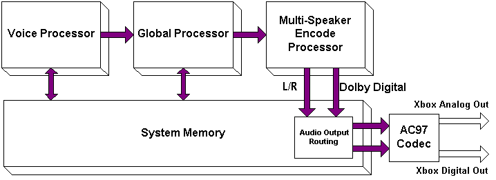
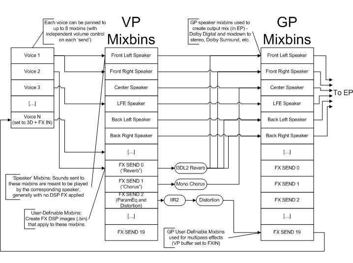

The Xbox video game system has several components that are useful for real-time soundtrack and sound effects creation. In addition to the Pentium chip, there is the DVD drive, hard disk, system memory, and Xbox Media Communications Processor (MCP).
Games on the Xbox are delivered on DVDs. The DVD is a useful medium for storing large amounts of data that does not need to be accessed quickly. It is therefore well suited for stereo or multichannel pulse code modulation (PCM) background music. Data may be easily streamed off the DVD into the main system memory to provide continuous background music. The DVD drive is not well suited for sound effects playback, because the mean access time of the DVD drive is too long to be able to provide near instantaneous access to sounds that need to be triggered in response to game actions. Data that needs to be accessed with lower latency than is possible with the DVD drive may be stored on the Xbox hard disk.
The hard disk acts as a moderately low-latency, large cache data store. Audio data stored on the hard disk may be accessed in milliseconds, providing a low-latency solution for most instantaneous sound effect requirements. Sound data that needs to be accessed with lower latency than is possible when streaming sounds from the hard disk need to be stored in system memory. For example, sounds that need to be played quickly and often may need to be stored in the system memory. Also, playing many sounds simultaneously may be difficult using the hard disk.
The 8-GB hard disk is divided into several partitions. Two of these partitions apply to audio:
The playlist storage partition is used to store audio ripped from the user's own Red Book audio CDs. Using the Xbox Dashboard, the user can place tracks from any audio CD on the hard disk, compressed in the Microsoft® Windows Media® Audio (WMA) format. Titles can choose to read these WMA files through playlists, either to supplement their own audio tracks or in creative ways that do not affect the existing scores and ambiences authored by the content creator. For some kinds of titles, the user's own soundtrack mixes are appropriate for in-game use; other titles may choose to ignore these playlists entirely. No title should assume that playlists will always be available for use.
The utility region is the scratch space that is made available to a title upon startup. The title can use the 750-MB partition in any way. Audio content from the DVD may be copied to the utility region for more rapid access.
Note WMA-compressed audio provided by the game is placed here, not in the WMA playlist area.
The utility region actually contains three separate 750-MB partitions. A title should assume that the utility region it is granted on startup is empty. There is no concept on the Xbox of installation space. In most cases, the partition is wiped when the machine is turned on. However, if a title is booted and one of the three partitions was last used by the game, it may be granted the same partition it used previously. This assignment allows for a quicker start-up in those circumstances, because some or all of the data normally pulled down from the DVD may still reside on the hard disk. It is up to the particular title to confirm this.
The Xbox contains 64 MB of system memory that is universally shared by all Xbox processors. For this reason, it is often referred to as Universal Memory Architecture (UMA) memory or simply as UMA. All sounds that are to be played must ultimately be stored in UMA memory. Typically, the UMA memory contains small buffers of sounds streamed from the hard disk (or DVD drive) and complete sounds that have the lowest latency and highest concurrency.
The Xbox MCP is a powerful hardware synthesis engine with advanced audio processing capabilities. This processor has a multiprocessor pipelined stage architecture equivalent to the Xbox graphics chip. The Xbox MCP is capable of mixing and processing multiple sound streams simultaneously. All sound on the Xbox must ultimately be processed by the Xbox MCP prior to output.
The following diagram shows the audio related processors (except for the setup engine) inside of the Xbox MCP:

The chip supports 256 total PCM voices. Of those voices, 192 are 2D wavetable voices, which are all Downloadable Sounds Level 2 (DLS-2) capable. There are 64 3D Head Relative Transfer Function (HRTF) voices. The chip also supports 3D positional effects (reflection, occlusion, obstruction, and reverb) compliant with Interactive 3D Level 2 (I3DL2) for all 3D voices.
This diagram shows a more detailed view of the relationship between voices, the Voice Processor (VP) Mixbins, the Global Processor (GP) Mixbins, and the Encode Processor (EP):

The following sections discuss in detail the specifics of the processors, as well as basic signal flow between them:
Four independent hardware processors on the Xbox MCP pertain to audio:
The setup engine is responsible for controlling access from main memory to the other audio processors within the Xbox MCP. It gathers data from main memory and converts it to linear 24-bit, signed PCM data, which is used by the voice processor, global processor, and encode processor. The setup engine also handles data addressing, including loop processing for DLS-2 compliance.
The voice processor is a fixed-function digital signal processor (DSP) for voice support. This processor supports 256 total hardware voices (mono or stereo). Of the 256 hardware voices, 64 of them can apply HRTF 3D audio processing for advanced 3D audio effects. The voice processor supports I3DL2-compliant 3D positional effects (environmental reverberation, occlusion, and obstruction) for all HRTF 3D voices. Every voice may be processed by a programmable filter capable of DLS-2 filtering (low-pass with resonance), one band of parametric equalization, and/or I3DL2 occlusion/obstruction filtering. Two hardware low frequency oscillators (LFOs) are provided, per the DLS-2 specification, and may be used to control amplitude, pitch, and/or DLS-2 filter cutoff frequency. Similarly, each voice has two six-stage DAHDSR (delay, attack, hold, decay, sustain, release) envelopes, which may also be assigned to amplitude, pitch, or DLS-2 filter cutoff.
An additional feature of the voice processor is multipass processing. This allows multiple passes through the voice processor pipeline for a single sound. When a voice is in multipass mode, it receives its data from one of the submixes on the voice processor. Multipass processing is typically used when multiple passes through the voice processor pipeline filter block are desired or to conserve 3D HRTF voices when multiple sounds need to be positioned in the same location in 3D space.
The global processor is a Motorola 56300–compatible, programmable DSP core used for effects processing. The global processor has a 133-MHz clock speed.
Once PCM data has been processed, the voice processor places all audio data into one or more submixes. The submixes provide the link between the voice processor and the global processor DSP. The global processor can read data from each of the voice processor submixes and process the data further.
Because the global processor is ultimately responsible for creating the final output stream from the submixes, the global processor determines the usage of the individual submixes. In many applications, certain submixes are used to represent individual speaker outputs, while other submixes are effects sends and so on. Other applications might define submixes to represent a music submix, sound effects submix, or dialog submix.
Besides the global processor, a second general purpose programmable DSP is available: the encode processor. The encode processor receives data from the global processor and outputs to system RAM. A typical use for the encode processor is to receive the interleaved PCM audio samples, which represent audio data destined for specific speakers, and create final output for the speakers. This may include multichannel to stereo mixdown or other multichannel audio encoding processes. From the encode processor, the final mixed or encoded data can be sent to the digital and analog outputs of the Xbox.
Audio data resides in the main system memory as linear PCM data. The setup engine formats the data and sends it to the voice processor. The voice processor accepts PCM data from the setup engine and sends it through the voice processor pipeline. The pipeline performs SRC and pitch-shifting, envelope, filtering, and optionally, 3D audio processing. At the end of the voice pipeline, each voice is scaled and submixed for output and/or effects processing. The global processor reads data from the voice processor and performs any desired audio effects processing (reverb, flange, and so on). The global processor also creates a final PCM N-channel data stream, which represents the data to be output to the speakers. Prior to output, the encode processor may further process the N-channel PCM stream. Typically, the encode processor is used to perform various multichannel encoding algorithms or multispeaker virtualization to create digital bit streams suitable for decoding or playback by an external speaker system. Finally, the audio data is output to the stereo DAC and digital output on the Xbox.